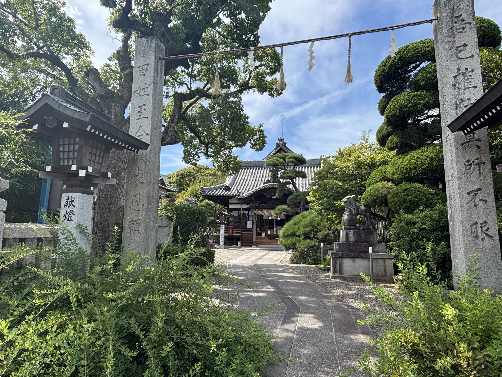
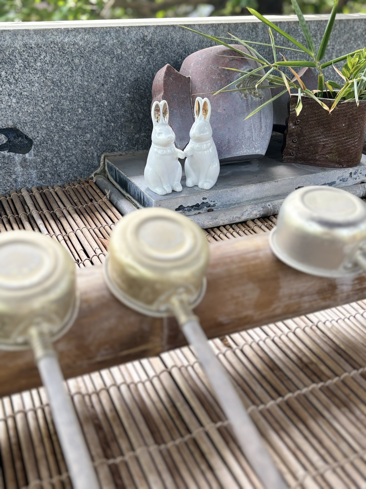
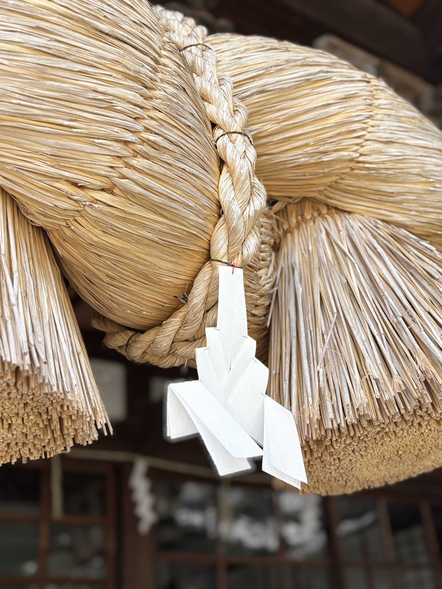

アクセスではなく、境内のなかのご案内です。石碑、うさぎ、だいこくさま。観光のついでに歩いてみてください。

御社殿
大国主大神をお祀りする社殿です。出雲らしい一文字張りのしめ縄にも注目してください。
だいこくさまとうさぎ
境内には大国主大神とうさぎの姿があります。因幡の白うさぎの伝承につながるご縁の象徴です。
石碑
境内の石碑も、この地と出雲をつなぐ記憶です。写真と解説は、順次追加していきます。


手水とうさぎ
手水舎のそばに、白いうさぎが並んでいます。因幡の白うさぎの伝承につながる、このおやしろらしい光景です。


しめ縄
出雲らしい一文字張りのしめ縄です。紙垂（しで）が風に揺れる様子も、参拝の見どころです。

だいこくさま